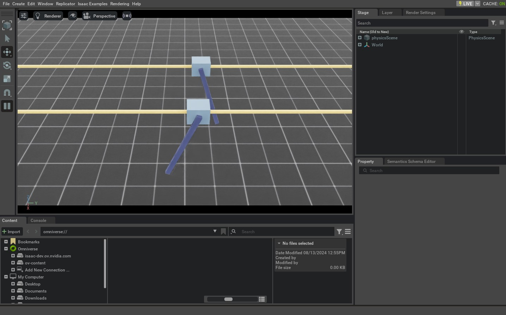

本教程介绍如何与仿真中的 Articulation Robot 交互。在上一节 Rigid Object 操作的基础上，我们将进一步学习设置关节状态，并向 Robot 的关节发送 Command。
1 代码
本教程对应 run_articulation.py，位于 scripts/tutorials/01_assets 目录。
代码 run_articulation.py
# Copyright (c) 2022-2026, The Isaac Lab Project Developers (https://github.com/isaac-sim/IsaacLab/blob/main/CONTRIBUTORS.md).
# All rights reserved.
#
# SPDX-License-Identifier: BSD-3-Clause
"""This script demonstrates how to spawn a cart-pole and interact with it.
.. code-block:: bash
# Usage
./isaaclab.sh -p scripts/tutorials/01_assets/run_articulation.py
"""
"""Launch Isaac Sim Simulator first."""
import argparse
from isaaclab.app import AppLauncher
# add argparse arguments
parser = argparse.ArgumentParser(description="Tutorial on spawning and interacting with an articulation.")
# append AppLauncher cli args
AppLauncher.add_app_launcher_args(parser)
# parse the arguments
args_cli = parser.parse_args()
# launch omniverse app
app_launcher = AppLauncher(args_cli)
simulation_app = app_launcher.app
"""Rest everything follows."""
import torch
import isaaclab.sim as sim_utils
from isaaclab.assets import Articulation
from isaaclab.sim import SimulationContext
##
# Pre-defined configs
##
from isaaclab_assets import CARTPOLE_CFG # isort:skip
def design_scene() -> tuple[dict, list[list[float]]]:
"""Designs the scene."""
# Ground-plane
cfg = sim_utils.GroundPlaneCfg()
cfg.func("/World/defaultGroundPlane", cfg)
# Lights
cfg = sim_utils.DomeLightCfg(intensity=3000.0, color=(0.75, 0.75, 0.75))
cfg.func("/World/Light", cfg)
# Create separate groups called "Origin1", "Origin2"
# Each group will have a robot in it
origins = [[0.0, 0.0, 0.0], [-1.0, 0.0, 0.0]]
# Origin 1
sim_utils.create_prim("/World/Origin1", "Xform", translation=origins[0])
# Origin 2
sim_utils.create_prim("/World/Origin2", "Xform", translation=origins[1])
# Articulation
cartpole_cfg = CARTPOLE_CFG.copy()
cartpole_cfg.prim_path = "/World/Origin.*/Robot"
cartpole = Articulation(cfg=cartpole_cfg)
# return the scene information
scene_entities = {"cartpole": cartpole}
return scene_entities, origins
def run_simulator(sim: sim_utils.SimulationContext, entities: dict[str, Articulation], origins: torch.Tensor):
"""Runs the simulation loop."""
# Extract scene entities
# note: we only do this here for readability. In general, it is better to access the entities directly from
# the dictionary. This dictionary is replaced by the InteractiveScene class in the next tutorial.
robot = entities["cartpole"]
# Define simulation stepping
sim_dt = sim.get_physics_dt()
count = 0
# Simulation loop
while simulation_app.is_running():
# Reset
if count % 500 == 0:
# reset counter
count = 0
# reset the scene entities
# root state
# we offset the root state by the origin since the states are written in simulation world frame
# if this is not done, then the robots will be spawned at the (0, 0, 0) of the simulation world
root_state = robot.data.default_root_state.clone()
root_state[:, :3] += origins
robot.write_root_pose_to_sim(root_state[:, :7])
robot.write_root_velocity_to_sim(root_state[:, 7:])
# set joint positions with some noise
joint_pos, joint_vel = robot.data.default_joint_pos.clone(), robot.data.default_joint_vel.clone()
joint_pos += torch.rand_like(joint_pos) * 0.1
robot.write_joint_state_to_sim(joint_pos, joint_vel)
# clear internal buffers
robot.reset()
print("[INFO]: Resetting robot state...")
# Apply random action
# -- generate random joint efforts
efforts = torch.randn_like(robot.data.joint_pos) * 5.0
# -- apply action to the robot
robot.set_joint_effort_target(efforts)
# -- write data to sim
robot.write_data_to_sim()
# Perform step
sim.step()
# Increment counter
count += 1
# Update buffers
robot.update(sim_dt)
def main():
"""Main function."""
# Load kit helper
sim_cfg = sim_utils.SimulationCfg(device=args_cli.device)
sim = SimulationContext(sim_cfg)
# Set main camera
sim.set_camera_view([2.5, 0.0, 4.0], [0.0, 0.0, 2.0])
# Design scene
scene_entities, scene_origins = design_scene()
scene_origins = torch.tensor(scene_origins, device=sim.device)
# Play the simulator
sim.reset()
# Now we are ready!
print("[INFO]: Setup complete...")
# Run the simulator
run_simulator(sim, scene_entities, scene_origins)
if __name__ == "__main__":
# run the main function
main()
# close sim app
simulation_app.close()
2 代码解析
2.1 设计 Scene
与前面的教程一样，Scene 中包含 Ground Plane 和 Distant Light。不同之处在于，本例从 USD 文件生成 Cartpole Articulation，而不是 Rigid Object。Cartpole 由可沿 x 轴移动的滑车和可绕滑车旋转的杆组成；USD 文件保存其几何体、关节及其他物理属性。
Cartpole 使用预定义的 assets.ArticulationCfg。该 Configuration Object 包含生成方式、默认初始状态、各关节的执行器模型及其他元数据。有关创建此类配置的详细说明，请参阅“编写 Asset Configuration”教程。
与 Rigid Object 类似，将 Configuration Object 传给 assets.Articulation 构造函数，即可在 Scene 中生成并创建 Articulation 实例。
# Create separate groups called "Origin1", "Origin2"
# Each group will have a robot in it
origins = [[0.0, 0.0, 0.0], [-1.0, 0.0, 0.0]]
# Origin 1
sim_utils.create_prim("/World/Origin1", "Xform", translation=origins[0])
# Origin 2
sim_utils.create_prim("/World/Origin2", "Xform", translation=origins[1])
# Articulation
cartpole_cfg = CARTPOLE_CFG.copy()
cartpole_cfg.prim_path = "/World/Origin.*/Robot"
cartpole = Articulation(cfg=cartpole_cfg)
2.2 运行 Simulation Loop
Simulation Loop 会定期重置 Simulation，向 Articulation 设置 Command，推进 Simulation，并更新 Articulation 的内部 Buffer。
2.2.1 重置 Simulation
与 Rigid Object 一样，Articulation 也有描述根刚体的根状态；此外还有由各关节 Position 和 Velocity 组成的关节状态。
重置时，先调用 Articulation.write_root_pose_to_sim() 和 Articulation.write_root_velocity_to_sim() 设置根状态，再调用 Articulation.write_joint_state_to_sim() 设置关节状态。最后调用 Articulation.reset() 清空内部 Buffer 和缓存。
# reset the scene entities
# root state
# we offset the root state by the origin since the states are written in simulation world frame
# if this is not done, then the robots will be spawned at the (0, 0, 0) of the simulation world
root_state = robot.data.default_root_state.clone()
root_state[:, :3] += origins
robot.write_root_pose_to_sim(root_state[:, :7])
robot.write_root_velocity_to_sim(root_state[:, 7:])
# set joint positions with some noise
joint_pos, joint_vel = robot.data.default_joint_pos.clone(), robot.data.default_joint_vel.clone()
joint_pos += torch.rand_like(joint_pos) * 0.1
robot.write_joint_state_to_sim(joint_pos, joint_vel)
# clear internal buffers
robot.reset()
2.2.2 步进 Simulation
向 Articulation 应用 Command 分为两个步骤：
设定共同目标：这设置了所需的联合 Position、Velocity 或 Articulation 的工作目标。
将数据写入Simulation：基于 Articulation 的 Configuration，该 Step 可以处理任何 驱动转换 并将转换后的值写入 PhysX Buffer。
本教程使用关节力矩 Command 控制 Articulation。为此，需要把 Articulation 的 Stiffness 和 Damping 设为零；Cartpole 的预定义 Configuration 已完成这一设置。
每个 Step 随机采样关节力矩，并通过 Articulation.set_joint_effort_target() 设置目标。随后调用 Articulation.write_data_to_sim() 将数据写入 PhysX Buffer，最后推进 Simulation。
# Apply random action
# -- generate random joint efforts
efforts = torch.randn_like(robot.data.joint_pos) * 5.0
# -- apply action to the robot
robot.set_joint_effort_target(efforts)
# -- write data to sim
robot.write_data_to_sim()
2.2.3 更新状态
每个 Articulation 都包含一个 assets.ArticulationData Object，用于保存自身状态。调用 assets.Articulation.update() 可从 Simulation 更新其中的 Buffer。
# Update buffers
robot.update(sim_dt)
3 代码执行
要运行代码并查看结果，让我们从 Terminal 运行 Script：
./isaaclab.sh -p scripts/tutorials/01_assets/run_articulation.py
这个 Command 应该打开一个 Stage ，其中有一个Ground Plane、Light和两个随机移动的Cartpole。
要停止 Simulation，您可以关闭窗口，或按 Ctrl+C 在 Terminal 中。

在本教程中，我们学习了如何创建一个简单的 Articulation 并与之交互。我们看到了如何设置状态 Articulation（其根状态和联合状态）的结构以及如何对其应用 Commands。我们还了解了如何更新其 Buffers 从 Simulation 读取最新状态。
除了本教程之外，我们还提供了其他几个Scripts，即Spawn与Robots不同。这些都包括在内
在 scripts/demos 目录。您可以将这些 Scripts 运行为：
# Spawn many different single-arm manipulators
./isaaclab.sh -p scripts/demos/arms.py
# Spawn many different quadrupeds
./isaaclab.sh -p scripts/demos/quadrupeds.py